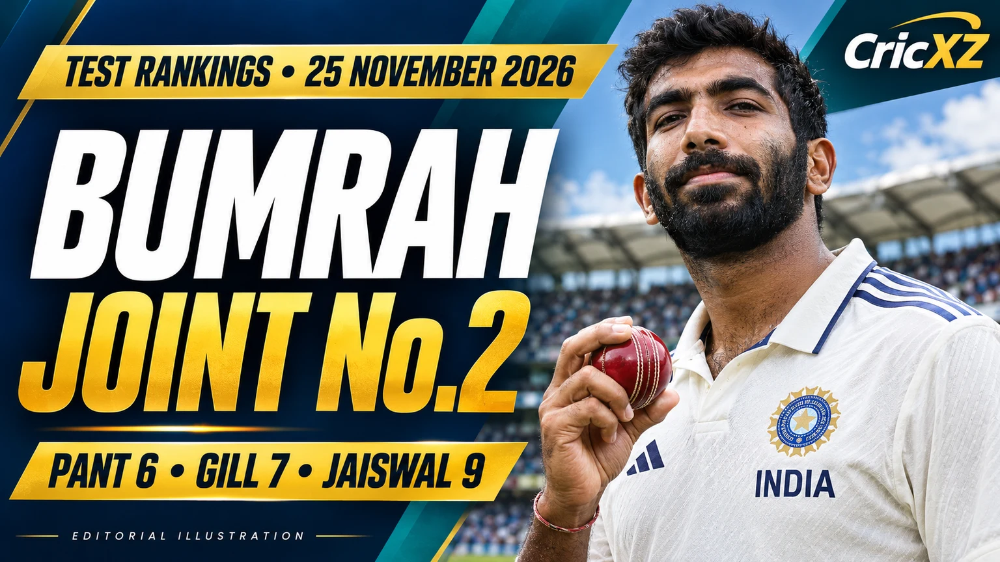
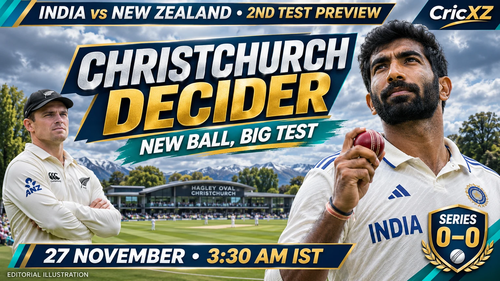
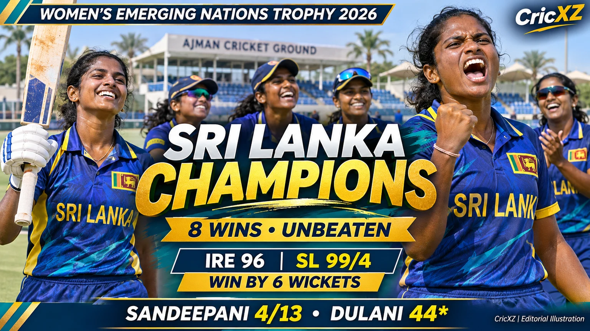
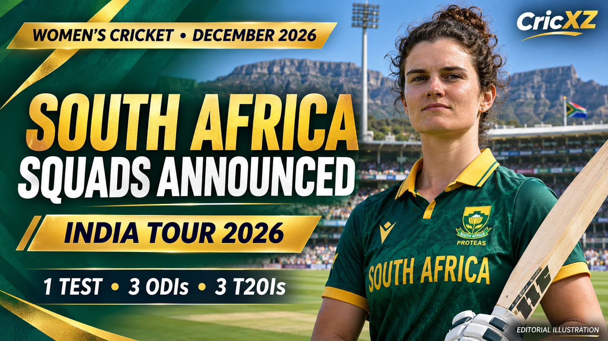

Latest Cricket News

Christchurch Day 1: New Zealand Resist at 246/5
Day 1 stumps, 27 November: Blundell 53* and Phillips 36* steady New Zealand after India’s three-wicket burst at 110.
Read More →
Bumrah Joint No.2; Pant, Gill and Jaiswal Rise
ICC’s 25 November Test rankings update brings gains for India: Bumrah joint second, Pant sixth, Gill seventh and Jaiswal ninth.
Read More →
India vs New Zealand: Christchurch Test Preview
Morkel wants new-ball impact as the series finale approaches. Hagley Oval hosts the second Test from 27 November, 3:30 am IST.
Read More →
Mulder 7/31 Seals South Africa’s 2–0 Sweep
A century and seven-wicket haul from Mulder power South Africa to an innings-and-219-run win over Bangladesh at Centurion.
Read More →
Sri Lanka Win Women’s Emerging Nations Trophy
Sandeepani’s 4/13 and Dulani’s unbeaten 44 seal a six-wicket final win over Ireland. Sri Lanka finish with eight wins from eight matches.
Read More →
South Africa Women Name Squads for India Series
Wolvaardt leads across formats as new call-ups join the hosts. See the seven-match December schedule, venues and start times in IST.
Read More →
Tickner Out of Second India Test; Fisher Called Up
A right-hamstring injury rules Tickner out of Christchurch. Matt Fisher joins New Zealand’s squad ahead of the Test starting on 27 November.
Read More →
Vaibhav 204 off 53 Rewrites List A Records
A 28-ball century, 52-ball double century and 28 sixes power India A to a seven-wicket win against UAE in Doha.
Read More →Sri Lanka vs Ireland: Women’s Emerging Nations Final Set
The finalists meet in Ajman on 25 November after Ireland’s 44-run win over the Netherlands and Sri Lanka’s four-run victory against Pakistan.
Read More →